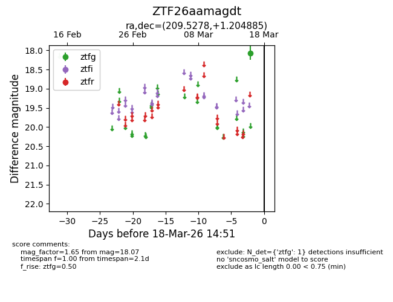
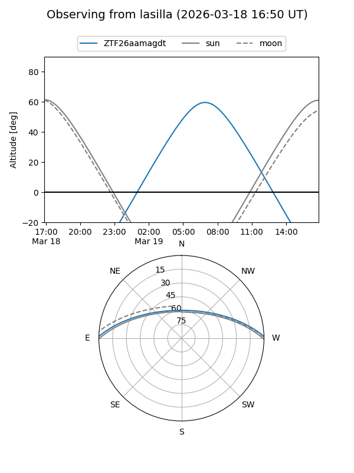
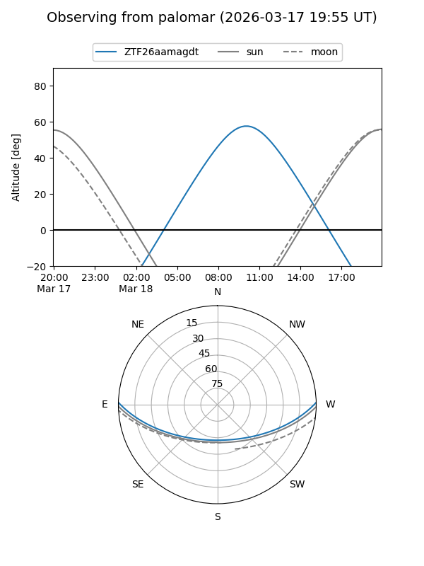

ZTF26aamagdt
Target ZTF26aamagdt at 2026-03-18 14:56
Aliases and brokers:
FINK: link
Lasair: link
ALeRCE: link
alt names
ZTF26aamagdt (ztf,fink_ztf)
Coordinates:
equatorial (ra, dec) = 209.5278,+1.20489
equatorial (HMS+DMS) = 13:58:06.68,+01:12:17.59
galactic (l, b) = (337.3831,+59.54092)
Flags:
Photometry:
last ztfg=18.07
1 ztfg detections
Lightcurve

Visibility


Additional plots